ワークシートヘッダ行でサポートされるデータ
WksHeaderRow-DataSupportDisplay
Originのワークシートは、データ行の上にあるヘッダ行でメタデータを表示できます。これらのヘッダ行に含まれるメタデータは、グラフ作成やデータ分析操作で利用できます。
デフォルトでOriginの起動時に表示されるワークブックテンプレートは、行ヘッダにロングネーム、単位、コメント、F(x) のみを表示しています。ユーザはインポート時に、サンプリング間隔、スパークラインなどの追加のヘッダ行を表示させることができます。
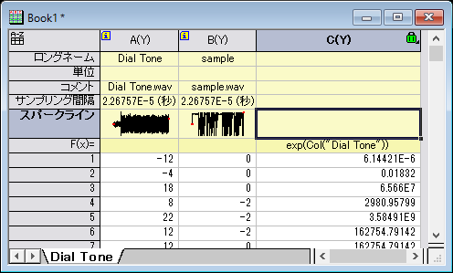
またユーザは、手動でユーザ定義もしく組み込みのパラメータの行を追加することができます。これは情報のみとなることに留意してください。ユーザ定義または組み込みのパラメータでは、行をフォーマットできます。例えば、指定した小数点以下の桁を表示した数値として設定したり、日付や時刻として設定したりできます。
また、列にデータを埋める簡単な方法を確認してください。
| Note: このページで紹介している機能は、ユーザが作成するLabTalkスクリプトで利用可能です。 詳細は、列ラベル行に表示される情報を参照してください。
|
列ラベル行に表示する情報
ワークシートテンプレートの初期設定では、次の4つの列ラベル行が表示されます。ロングネーム、単位、コメント 及び F(x)= （列の式）。これらの列ラベル行は、ワークシートに列の情報を必要性に応じて表示したり、非表示にしたりできます。
列ラベル行の操作にはいくつかの方法があります：
- ミニツールバーの使用列ラベル行のミニツールバーは、最近のバージョンで導入されました。行ラベルの1つまたは複数の行ヘッダをシングルクリックすると、ミニツールバーが表示されます。選択した行を、非表示、上に移動、下に移動、Pボタンをクリックしてユーザ定義のパラメータ行を追加、といったことができます。
- コンテキストメニューを使用します。列ラベルの1つまたは複数の行ヘッダを右クリックして、表示/非表示にしたり、ロングネームや単位として設定したり、ユーザ定義パラメータなどを追加したりできます。
-
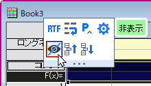
- 列ラベル行ダイアログの使用任意の列ラベルの行ヘッダを右クリックし、コンテキストメニューから列ラベル行を編集...を選択します。ヘッダ行の表示/非表示、、削除、ドラッグしてラベル行の順序を変更、ユーザ定義パラメータの作成、名前の変更、削除を行います。
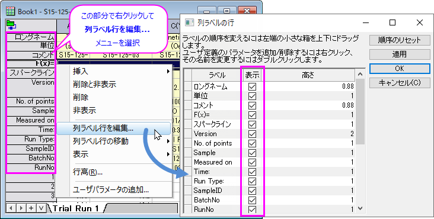
- 表示：コンテキストメニュー を使用します。(a) ワークシートのタイトルバー、または (b) ワークシート列の右側(ワークブックウィンドウの内側)の空のスペースを右クリックして、 ショートカットメニューから表示 を選択して、行ヘッダの非表示を行うことができます。
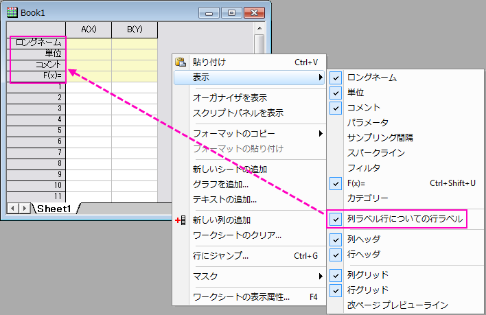
スタイルの設定
ミニツールバーまたはワークシートプロパティダイアログを使用して列ラベルの行スタイルを設定するか、コンテキストメニューを使用してスタイルを設定します。
Note：リッチテキストがチェックされていない場合、ギリシャ文字、特殊文字、LaTeX はワークシート内でエスケープシーケンスとしてのみ表示されます。ギリシャ語テキストの場合は \g( )、LaTeX の場合は \q( ) などですが、軸タイトルや凡例などグラフでは問題なく表示されます。
列ラベル行のコピーと貼り付け
全ての列ラベル行をコピーする場合は、コピーする列ラベル行を右クリックし (編集：コピーまたは Ctrl+C)、貼り付け先に移動します (編集：貼り付けまたは Ctrl+V)。転置して貼り付け、リンク貼り付けも行えます。
選択したデータとともに列ラベル行メタデータをコピーするには、右クリックしてコピー（ラベル行を含む）を選択します。非連続な列選択とワークシートのサブレンジ選択がサポートされています。
- ラベル行の部分だけを貼り付けたい場合には、貼り付けるラベル行範囲の左上のセルで右クリックし、 貼り付け を選択します。（ユーザパラメータの行は追加されません）
- データ行の部分だけを貼り付けたい場合には、貼り付けるデータ範囲内の左上のセルで右クリックし、 貼り付け を選択します。（必要に応じて、行が追加されます）
- ラベルとデータ値両方を貼り付けるには、一番左の列の列ヘッダをクリックして選択し、貼り付けます。メタデータとデータの両方がワークシートに貼り付けられます。列、データ行、ユーザパラメータ行は必要に応じて追加されます。
選択した列のラベル行メタデータのみをコピーするには、列を右クリックし、コピー (式)、コピー (ラベル行)、コピー (式とラベル行) を選択します。
ラベル行セルで名前付き範囲を定義
列の式や参照線などで使用する名前付き範囲として、任意の列ラベル行のセルを定義できます。
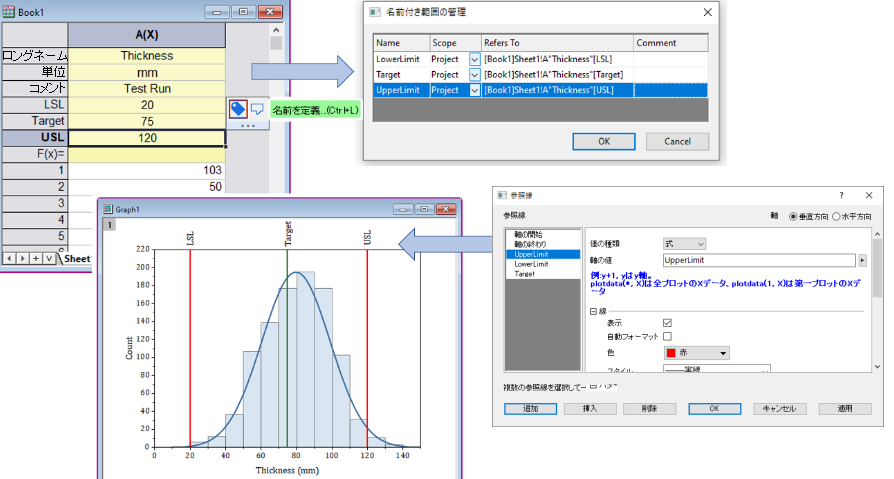
ラベル行のセルにノートを挿入
任意のラベル行セルにポップアップするノートを挿入することができます。例として、コメントセルにポップアップノートを追加することで、コメントセルの縦方向のスペースを使って全体を表示することなく、コメントを拡張することができます。
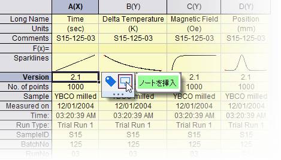
- ヘッダ行のセルをクリックします。
- ミニツールバーのボタンノートを挿入をクリックします。
- ノートではOriginリッチテキストとハイパーリンク、表、LaTeX数式や画像といったものを含む形式をサポートしています。
- ノートコンテンツはツールバーの書式の各ボタンや段落スタイルを使って編集できます。
- 一度セルノートが追加されたあと、ユーザは再度セルを選択して、ノートウィンドウで開くボタンや追加と要素のフォーマットをクリックできます。
- ポップアップノートはノートのあるセルの右上の角にカーソルをホバーしたときに表示されます。
- ポップアップノートは単純なテキストを表示することに最も適しています。要素が混在する複雑なメモは、ポップアップ表示ではなく、ノートウィンドウで直接編集して表示するのが最適です。
- 列リストビューでは、列ラベル行のセルノートもサポートします。
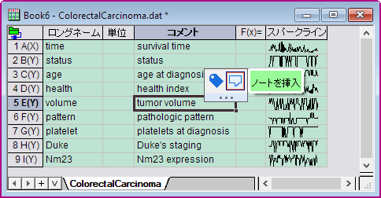
組み込みのラベル行
ロングネーム
列のショートネームはアルファベット順に自動的に付けられ、デフォルトでは変更できません。そのため、列のロングネーム行を使用してわかりやすい名前を付けることをお勧めします。
ワークシート列のロングネームについての情報は、Originワークシート列の命名規則 をご覧下さい。
Originは、この情報を使ってグラフに注釈を付けることができます。 例えば、ロングネーム と 単位 が指定されていると、自動的に2Dグラフの X および Y 軸のラベルとして使われます。
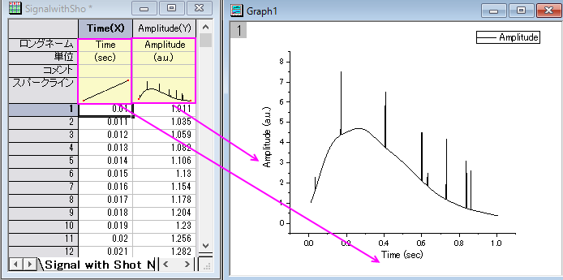
単位
単位行は、ワークシートデータ列の単位を保存します。単位行ではリッチテキストがデフォルトで有効です。
別の利用法としては、グラフの凡例の中にロングネームと単位を使用することもできます。
 | インポート後、単位がロングネームに含まれている場合は、（1）ロングネームラベル行を選択し、（2）表示されるミニツールバーで、ロングネームから単位を抽出...ボタン をクリックします。単位をロングネームに含んだまま、単位を単位ラベル行にコピーする場合は、ソースから削除するをオフにします。 をクリックします。単位をロングネームに含んだまま、単位を単位ラベル行にコピーする場合は、ソースから削除するをオフにします。
|
コメント
各ワークシート列には、1つ以上のコメント行を持たせることができます。 各行の行末でCTRL + ENTERキーを押して改行すると、コメント行に複数行入力できます。 事前に複数行を定義したファイルをインポートする場合、これらはコメント行に保持されます。
F(x)
F(x)=ヘッダ行には、次のものが表示されます。
- 列の数式これは、列に値を入力するために通常使用される数式です。
- 式のテキストこれは、セルに直接入力するか、式のテキスト ダイアログボックスに入力して列式の代わりに表示できる代替テキストです。たとえば、セルに長い数式を表示するのが実用的でない場合は、数式テキストの表示を有効にし、列の数式の目的を示す意味のあるインジケータを表示します。
セルへの直接入力はオン（初期設定）とオフを切り替えられます。F(x)= への直接入力をオフにするには、
- 値の設定 を開きます(列を選択して、列：列値の設定を選択)。
- オプション メニューをクリックします。
- 式セルを直接編集 のチェックを外します。
列の式の作成についての詳細は、値の設定：クイックスタート または 値の設定：オプションメニュー をご覧ください。
| - F(x)=行の表示/非表示切り替えには「CTRL + SHIFT + U」のショートカットが便利です。対応するショートカットキーを使って、この行の表示/非表示を切り替えることが出来ます。詳しくは このセクション をご覧ください。
- F(x)= 行のデフォルトの再計算モードは自動です。システム変数@AUFLで変更可能です。
|
「F(x)= 数式」の作成
以下の3つの方法で、F(x)=のセルに数式を入力します。
- セルでダブルクリックしてセルに直接数式を入力します。（前のセッションで述べたように、直接編集が無効ではない場合）
- 値の設定ダイアログボックスの上のパネルで数式を入力します。
- ショートカットメニューコマンドを使って数式を入力します。（次のセッションをご覧ください）
| 列の数式/セル式/F（x）=のオートコンプリートを無効にできます
- メニューの環境設定: システム変数をクリックします。
- 空の変数セルに、FACと入力します。
- 値セルに次のいずれかを入力します（値は加算されます）：0 =オートコンプリートをオフにする、1 =セルの数式とF(x)=ラベル行を有効にする、2 =列式を有効にする、3（デフォルト）=セルの数式/F(x)=および列式を有効にする
- OKをクリックしてダイアログを閉じます。
|
| 列ショートネームを含む数式をシフトで自動入力するには、Ctrl キーを押しながら数式セルの右下の角をドラッグします。
オートフィルの詳細は、このページをご覧ください。
|
F(x)= ショートカットメニューコマンド
直接編集が有効になっている場合、F(x)セルを右クリックし、次のいずれかを使用してセルに情報を入力します。
| セルを選択し、メインメニューから列：ユーザー式入力を選択して、列ラベル行のF(x)= セルに数式を直接ロードすることもできます。
|
F(x)= ショートカットメニューコマンドでPython関数を呼び出す
列の数式でPython関数を呼び出す際、追加でPythonファイルを開くショートカットメニューコマンドが表示されます。
- F(x)= セルの数式は py.で始まります。
- Python関数は外部ファイルに保存されます。デフォルトでは、labtalk.py と命名され、ユーザファイルフォルダに保存されます。現在の作業ディレクトリと作業ファイルについては、LabTalkPythonオブジェクトのドキュメントを参照してください。
| 上記の条件を満たすF(x)=セルを選択すると、ステータスバーに現在の作業ディレクトリとファイルへのパスが表示されます。
|
カテゴリー
カテゴリー 列ラベル行はカテゴリーデータを含むワークシート列が設定されているときに表示されます。（列を選択して右クリックし、カテゴリーとして設定 を選択します）セルの内容は、(a) データが並べ替えされているかどうか（＜自動＞が選ばれているか） (b) カテゴリーのリストがスペースで分けられていることを表示します。
- このセルをダブルクリックすると、カテゴリー ダイアログボックスから、この列でのカテゴリー表示を設定できます。(列のプロパティから、カテゴリータブを開いても同じ操作が可能です。)
- このセルを右クリックすると、幾つかのキーカテゴリータブを操作が重複した、「カテゴリー」ショートカットメニューが開きます。
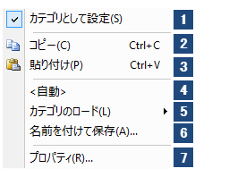
- カテゴリーとして列を設定またはクリア
- カテゴリーのコピー（カテゴリーとして列を設定するのを含む）
- カテゴリーのペースト（カテゴリーとして列を設定することを含む）
- <自動> (並べ替え情報とリストから直接生成するカテゴリーの表示） 、またはスペースで分けられたカテゴリー（直接的な更新は含まない）に設定します。
- 事前に保存したカテゴリをロードします（デフォルトパスはUser Files\カテゴリフォルダです）
- カテゴリーをファイルに保存
- プロパティを選択し、カテゴリダイアログを開きます。
カテゴリーデータのプロットのグラフ凡例の作成及び編集に関する情報は、カテゴリーデータの凡例 をご参照ください。
サンプリング間隔
ファイルサイズやデータファイル--特に等間隔で収集されたデータ--を少なくするために、独立変数(X列)を除外することができます。 この場合、サンプリング間隔の行がサンプリング間隔(X)を表示します。 OriginワークスペースにWAVファイルをドラッグ&ドロップして、簡単なデモを見ることができます。
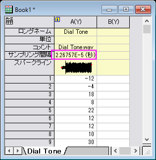
スパークライン
スパークラインはワークシートのY列に含まれる一連のデータセットの傾向を素早く表示します。
ワークシートにスパークラインを表示するには：
- メインメニューから、列：スパークラインの追加を選択します。
- 開いた小さなダイアログで、スパークラインの設定を行います。
- OKをクリックするとラベル行にスパークラインが追加されます。
各スパークラインは編集可能な埋め込まれたグラフであり、これはワークシートデータの各列の上部にあるスパークラインオブジェクトをダブルクリックして開くことができます。 グラフに編集を行うと、完全な表示ではありませんが、埋め込みオブジェクトに保存されます。スパークラインをホバーすると拡大されたスパークラインが表示されます。
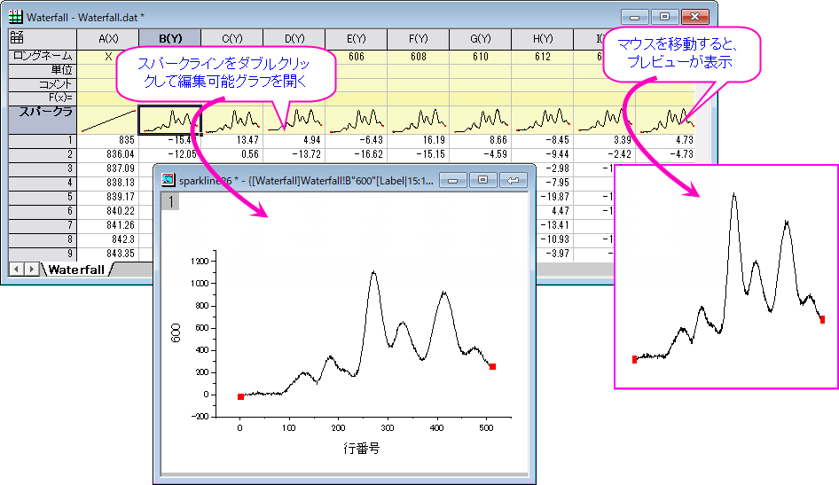
 | スパークラインが大量にあると、Origin の動作が遅くなる可能性があります。プロジェクトの動作が遅い原因がスパークラインの表示である可能性がある場合、システム変数@SPKを使用してスパークラインの作成を止め、プロジェクト内の既存のスパークラインを非表示にできます。また、delete -spkで現在のプロジェクトからスパークラインを削減可能です。
|
フィルタ
この行は、ワークシートのいずれかの列にフィルタが追加された場合にのみ表示されます。フィルタの状態が表示されます。
パラメータ
デフォルトでオフになっている組み込みのパラメータ 行は、温度、圧力、湿度、波長などのデータの表示サポートに利用されますが、これらのビルトインパラメータは名前を変更することが出来ないため、ユーザ定義パラメータ で探すのが最適です。
ワークシートパラメータがOriginグラフにどのように取り入れられるかについてのサンプルは、ウォータフォールグラフのカスタマイズをご覧下さい。
- いずれかの列ラベル行を右クリックしてコンテキストメニューで列ラベル行を編集を選択すると、列ラベルの行ダイアログが開きます。
- ラベルParameter＃の表示チェックボックスをオンにし、OKボタンをクリックして、パラメータを列ラベル行としてワークシートに追加します。
- 追加したパラメーター行の見出しをダブルクリックして、ユーザパラメータに移動ダイアログを開き、パラメータ名を変更してユーザパラメータとして設定します。
ユーザ定義パラメータ
ユーザ定義パラメータはいくつでも追加でき、名前も自由につけられます。
- いずれかの列ヘッダをクリックし、ミニツールバーのPボタンをクリックして、選択した行の前に挿入します。
- いずれかのラベル行ヘッダを右クリックし、ユーザパラメータの追加を選択して、選択した行の後に追加します。
- いずれかのラベル行ヘッダを右クリックし、挿入：ユーザパラメータを選択して、選択した行の前に挿入します。
- ラベル行ヘッダを右クリックしてコンテキストメニューで列ラベル行を編集を選択すると、列ラベルの行ダイアログが開きます。
- ダイアログで右クリックして行の追加やダブルクリックで名前を変更します。
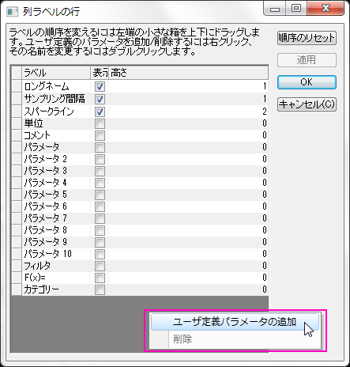
- 順序を入れ替えるには、左側の空のグリッドセルをドラッグします。
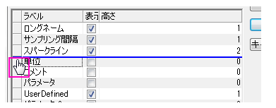
- 文字列は、その列ラベル行を参照するために使用される文字を一覧します。列ラベル行へのアクセス方法の詳細については、このLabTalkドキュメントを参照ください。
- 複数の行を選択して（連続する行を選択するにはCtrl + クリック、不連続な行を選択するにはCtrl + Shift + クリック）、一度に削除することができます。なお、元々あるラベル行は削除できません。そのため、選択した中に元々あるラベルが含まれている場合、それらの行はスキップされます。
- ワークシートをアクティブにして、フォーマット：ワークシート表示属性を選択します。表示タブで、列ラベル行の編集ボタンをクリックします。
データファイルにヘッダ内のメタデータが含まれていて、Originのインポートウィザードを使用してパラメータを事前に定義している場合は、ユーザ定義パラメータ行をデータインポート時に作成することもできます。
- 元々あるラベル行のヘッダでダブルクリックまたは
- 右クリックしてユーザパラメータとして設定を選択します。
これらのアクションにより、ユーザ定義パラメータ行の名前を入力できる パラメータ行に移動ボックス を開き、ユーザパラメータ行に行の内容を移動させます。
- 装置から生成されたデータファイルには、ユーザパラメータ行にインポートされる多数のメタデータが含まれている場合があります。たとえば、ユーザパラメータ行が10行以上あるなど多すぎる場合、データ領域を見るために下にスクロールするのが大変です。この場合、ユーザーパラメータ行を非表示にする必要があります。
- 任意のラベル行をクリックし、ポップアップするミニツールバーで、すべてのユーザーパラメーターを非表示/表示ボタン
 を選択します。
を選択します。
- 非表示になっているすべてのユーザーパラメータを表示するには
- 組み込みのラベル行（ロングネーム、単位、コメント）をクリックし、ポップアップ表示されたミニツールバーで、すべてのユーザーパラメーターを非表示/表示ボタンを選択、
または
- スクリプトウィンドウでLabTalkコマンドを実行します
wks.labels(D*)
ユーザ定義パラメータのフォーマット
すべてのワークシートの列ラベル・行データは、データが数字で表示されていても、文字列形式で保存されています。ユーザ定義パラメータ行では、見かけが数値のデータ(例えば、ユリウス日の値が「2458395」)の場合にも対応しています。
- ユーザ定義パラメータ行をクリックし、ミニツールバーのプロパティダイアログを開く...ボタン
 をクリックします。
をクリックします。
- 行ヘッダを右クリックし、 ショートカットメニューから ユーザ定義の書式を設定：詳細 を選択します。
どちらもセルのフォーマットダイアログボックスを開いて、書式設定と表示を設定します。
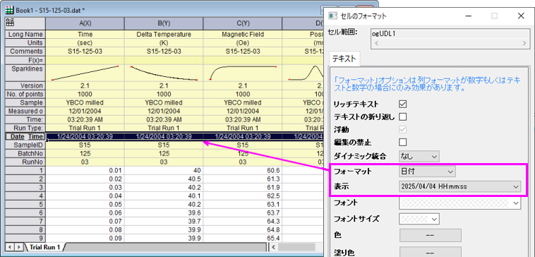
- セルのフォーマットダイアログのフォーマットドロップダウンリスト(テキストと数値、日付または時刻)から選択したデータ型に応じて、さらにカスタム表示形式が提供されます。
- ユーザ定義パラメータ行に格納された文字列が数値として表示されている場合に限り、日付と時間データのフォーマットを適用することができます。(例えば、Originではユリウス通日が利用されています。)このように数値列のフォーマットを利用して、ワークシートセルの式のように列ラベル行で計算処理を行うことができます。 (例えば、=value(wcol(j)[D1]$))
- 列ラベル行のデータは、どのフォーマットオプションが利用されていても、必ず文字列データであり、数値データではありません。
ユーザ定義パラメータ追加時の数式を定義
平均や標準偏差などの列統計を計算するために、ワークシートにユーザーパラメータ行を明示的に追加できます。
- 列ラベル行のヘッダを右クリックして、ショートカットメニューからユーザパラメータの追加を選択します。
- ユーザパラメータの追加ダイアログで、作成するユーザ定義行の名前を入力し、フライアウトメニューから共通の統計値のリストをクリックします。統計値はワークシートのデータが入力された列ごとに計算されます。
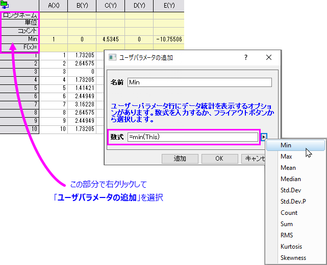
- 詳細...を選択してカスタム数式ダイアログを開き、ユーザ定義式を編集して保存できます。ユーザ定義式は
 リストに表示され、再利用可能です。
リストに表示され、再利用可能です。
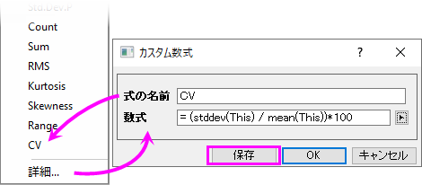
- ユーザパラメータ行の名前または数式を変更するには、ユーザパラメータ行のヘッダを右クリックして、ショートカットメニューから編集を選択します。
| 上記の手順では、すべてのワークシート列に数式が自動的に拡張されます。ただし、セルの下部右隅にマウスオーバーして、"+”アイコンをダブルクリックして、ラベル行数式を数式を含むセルの右側にあるすべてのセルに拡張することもできます。
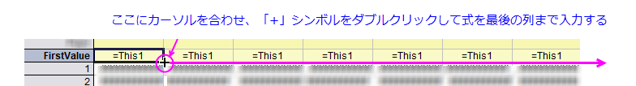
|
- コピーするユーザパラメータ行を選択します。
- ポップアップするミニツールバーで、ユーザパラメータの適用先ボタン
 を選択します。フライアウトメニューで、目的のワークシートを選択します。
を選択します。フライアウトメニューで、目的のワークシートを選択します。
- 現在のブックのシート: 現在のブック内の全てのシート。非表示のシートは含まれますが、埋め込まれているシートは含まれません。
- 現在のフォルダのシート: 現在のフォルダ内の全てのシート。サブフォルダのシートは含まれません。非表示のシートは含まれますが、埋め込まれているシートは含まれません。
- 現在のフォルダのシート(オープンのもの): 現在のフォルダ内の開いている(非表示ではない)すべてのシートサブフォルダのシートは含まれません。
- 現在のフォルダのシート(再帰的): 現在のフォルダ内の全てのシート。サブフォルダは再帰的に含まれます。
- プロジェクト中のシート: プロジェクト内の全てのシート非表示のシートは含まれますが、埋め込まれているシートは含まれません。
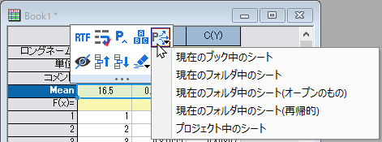
列ラベル行のコンテクストメニューの説明
以下の説明は、列ラベル行の各コンテクストメニューについてです。
ユーザパラメータの挿入
右クリックしたメニューから、挿入：ユーザパラメータ を選択し、現在の列ラベル行にパラメーターまたはユーザパラメーターを挿入します。
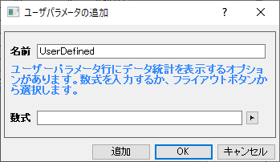
このダイアログは「ユーザパラメータの追加」ダイアログと同じです。
列ラベル行の表示/非表示
行を非表示にするには、列ラベル行の上で右クリックし、非表示 または削除と非表示 を選択します。削除と非表示 を選ぶと、現在のラベル行にある情報は消去され、行全体も隠されます。
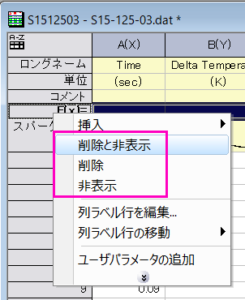
隠された列ラベル行を表示するには、表示 ショートカットメニューまたは、列ラベル行 ダイアログに移動します。詳細はこのセクション をご参照下さい。
行ラベルの名前を変更
デフォルトで表示される列ラベル行、ロングネーム、単位、コメント、およびF（x）=は、名前を変更できません。また、パラメータ行も変更できません。行見出しをダブルクリックすると（または見出しを右クリックして編集...コンテキストメニューを選択）、新ユーザーパラメータに移動ダイアログがポップアップ表示され、行ラベルの名前を変更できますが、ユーザーパラメータに変換されます。
- 列ヘッダをダブルクリックして、編集ダイアログ を開きます。
- 必要に応じて、名前 ボックスに新しい名前を入力し、数式 ボックスに式を有効にして入力します。
- OKをクリックして、ダイアログを閉じます。
列ラベル行の編集
列ラベル行を右クリックしてコンテキストメニューで列ラベル行を編集を選択すると、列ラベルの行ダイアログが開きます。このダイアログでは、列ラベルの非表示/表示、ラベル行の順序を変更、ユーザ定義パラメータを追加、各ラベル行の高さを指定できます。
列ラベル行の移動
- 列ラベル行上で右クリックし、列ラベル行の移動を選択して上へ/下へ/上に/下に移動を選択します。
または、
- 列ラベル行をクリックし、ミニツールバーからまたは
 ボタンをクリックします。
ボタンをクリックします。
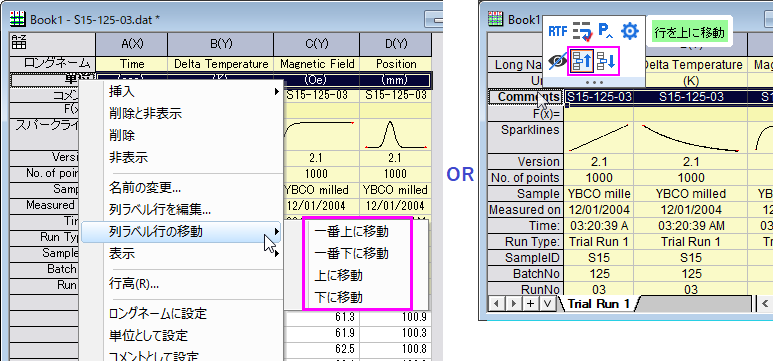
他の行をラベル行としてセット
1つ以上の行(列ラベル行またはデータ行)を3つの標準列ヘッダ(ロングネーム、ショートネーム、単位)、システムパラメータ、ユーザ定義パラメータに設定したい場合、右クリックしてロングネーム/ショートネーム/単位/コメント/パラメータ/ユーザパラメータに設定をコンテキストメニューから選びます。
ラベル行に行を追加
- 1つ以上の行(列ラベル行または行番号)を右クリックして、コメント/ロングネームの追加をコンテキストメニューから選択します。
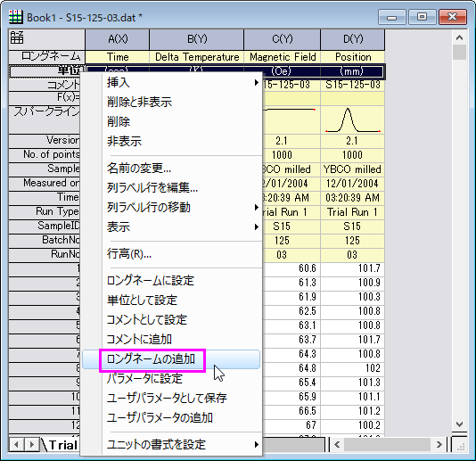
カテゴリーとして設定
- 列ラベル行を右クリックし、カテゴリーとして設定を選択します。
または、列ラベル行を選択し、表示されるミニツールバーからカテゴリボタン をクリックします。
をクリックします。
これにより、選択したラベル行がカテゴリデータを含むようにされます。
- 使用可能なラベル行には、ロングネーム, 単位, コメント, パラメータ, ユーザパラメータが含まれます。
- 列ラベル行をカテゴリとして設定したら、それを右クリックしてカテゴリーを選択できます。カテゴリーダイアログが開き、カテゴリーを編集できるようになります。
- この機能は、列を複数のプロットグループまたはレイヤにプロットする場合、および同じラベル行を持つ列について、異なるグループ/レイヤ間で同じプロットプロパティ (色、シンボル形状、サイズなど) を共有したい場合に役に立ちます。この場合、この列ラベル行をカテゴリとして設定し、プロットの色/形状/サイズ...をこのラベル行にマップできます。
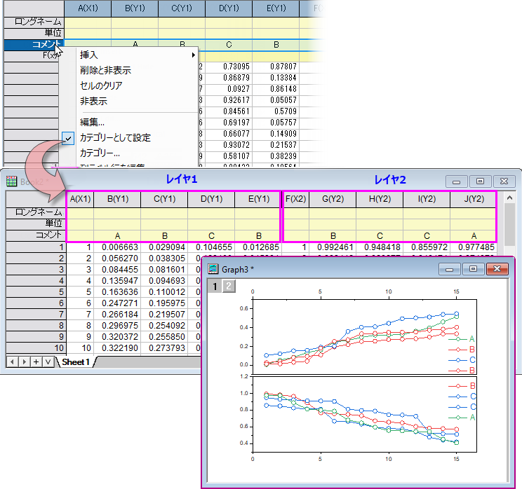